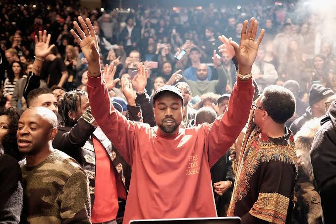

Он переписал звук целого поколения
От ускоренного соула до автотюна и индастриала: как Канье Уэст каждые несколько лет менял правила хип-хопа и поп-музыки. Двигайте курсором и скроллите, сфера реагирует.
Эволюция дискографии
Выберите трек0:00 / 0:30
Демо-отрывок синтезируется в браузере. Свои mp3 подключаются через поле preview_url.
Как менялся звук индустрии
Было и стало: архитектура сэмпла
Масштаб в цифрах
Галерея

Нажмите кнопку, чтобы получить цитату или принцип.